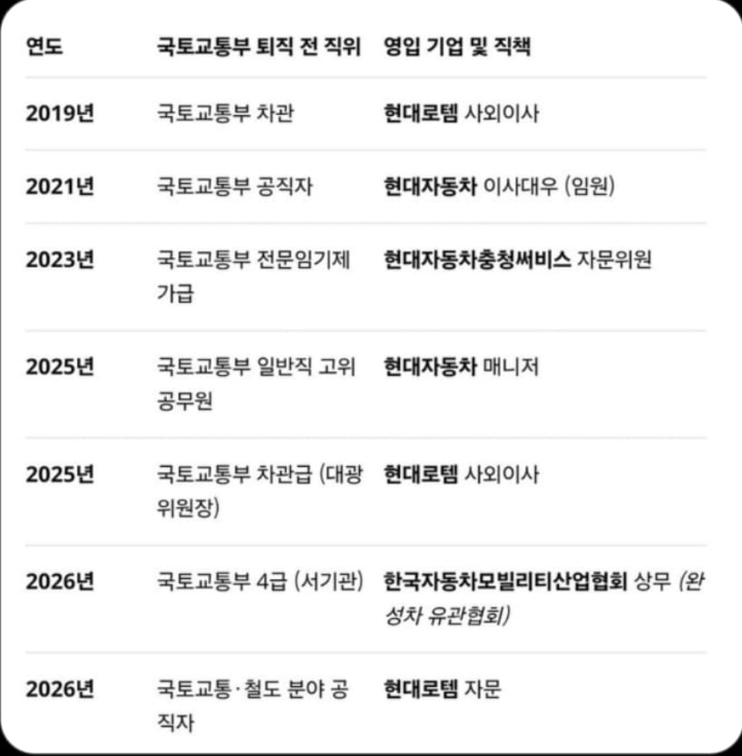

국토쪽은 건설사 이사로 가고 교통쪽은 현기차 이사로 가나
그래서 테슬라를...
아라사카냐 무슨
병신민국
전관예우 현차카르텔 망해라 짱대기아차그룹
"답이 됐으려나?"
하단 좆만한 방향지시등이 통과 되는 이유
돈 많이 벌겠네..
매니저 뭔데
ㅋㅋㅋㅋㅋㅋㅋㅋㅋㅋㅋㅋㅋㅋ아시바
현대차 사원,대리급 직위인데
경력직 아니라 신입으로 들어갔나보네
로톔이 기차만드는곳아녀?
나랏일은 저런 퇴직 후 장래를 보고도 하는거구나..
매니저면 현대차에 좋은 감정이 있을 것 같진 않은데?
하수:이러니 FSD승인을 안해주지
고수:국토부 퇴직자를 테슬라에 이직시키자
현토부 맞네
이새끼들도 전관비리구나
정경유착
직업 선택의 자유라고 ㅋㅋㅋㅋㅋㅋㅋㅋ